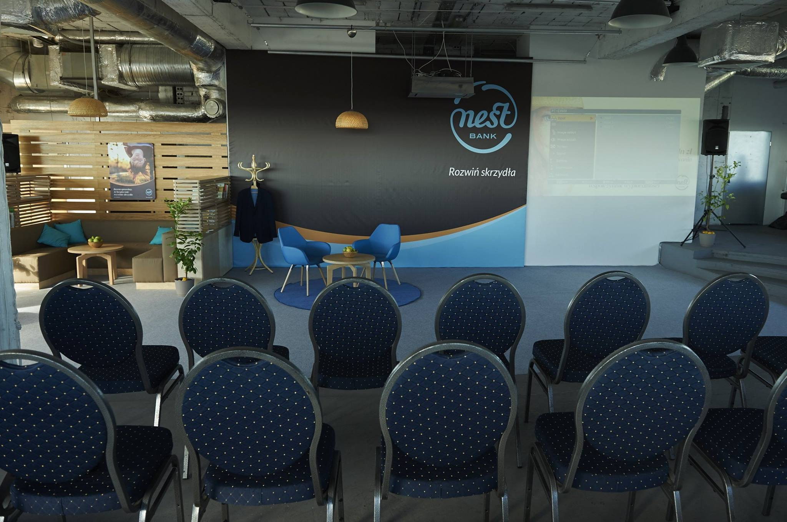
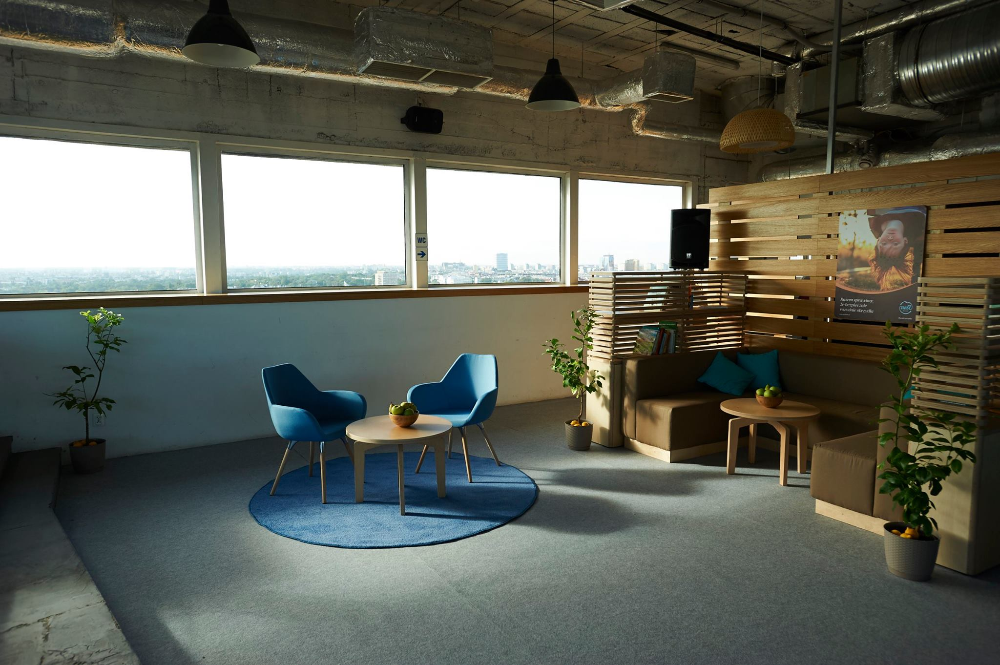
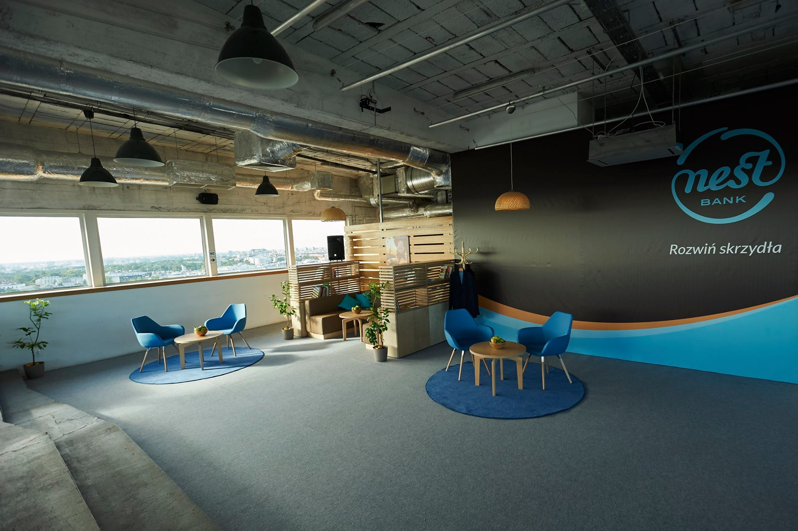

This is a place for a welcome page
This needs further styling. This page should be an eyecatcher. Something that will drag attention.
Background video is optional but can be added if will help to achieve the goal
This needs further styling. This page should be an eyecatcher. Something that will drag attention.
Background video is optional but can be added if will help to achieve the goal
Left navigation will be improved and js driven. Need to consider if this should occupy it's own container
or should be placed on top of current view
We need to think where to put logo, I was thinking about the fixed position left,top, above the navigation
O nas
Twórcy dobrego projektu
Aby nazwać się twórcą dobrego projektu trzeba się w dzisiejszych czasach trochę postarać. Mam tu na myśli projekt graficzny jak również projekt reklamowy w szerszym tego słowa znaczeniu.
„Projekt” czy też „reklama” to teraz cała wizja i całościowa koncepcja,
która ma na celu sprzedaż lub promocję danego produktu. Potrzeba tu zespołu kreatywnych ludzi
bo współczesny klient jest już dobrze zorientowany w tym czego oczekuje i jaki chce osiągnąć cel.
Nie łatwo zadowolić dzisiejszego konsumenta. Zwykły slogan reklamowy na bilbordzie typu „Ojciec prać”
już nie wystarczy. Współczesny projekt musi być zaskakujący i często działa podprogowo i wręcz trzeba na niego spojrzeć szerzej
aby zrozumieć przesłanie autora.
Chciałoby się powiedzieć … Jesteśmy COOKIE PRINTERS. Jesteśmy z pasji dla tworzenia. Jesteśmy dla tworzenia z pasją.
Nasze realizacje doceniło już szerokie grono naszych klientów. Zaufali nam i zostali. Dlaczego?
Jakość pamięta się o wiele dłużej niż cenęcyt. Gucci
To prawda! Nigdy nie podpisałbym się własnym nazwiskiem pod produktem, który nie ma w sobie tego, co jest najlepsze we mnie


Piszą o nas
Zobacz co o nas piszą!
Event Services
Sukces wydarzenia zależy w dużej mierze od sposobu zaprojektowania przestrzeni …
Aby nazwać się twórcą dobrego projektu trzeba się w dzisiejszych czasach trochę postarać. Mam tu na myśli projekt graficzny jak również projekt reklamowy w szerszym tego słowa znaczeniu.
Estetyczny i niebanalny wygląd otoczenia, w którym się znajdujemy jest jednym z decydujących czynników składających
się na doświadczenie komfortu, luksusu, ekskluzywności i przynależności do grupy społecznej o wyjątkowym statusie.
Dlatego też część graczy na rynku zdecydowała się na wykorzystanie tego mechanizmu w swoich strategiach marketingowych.
Inwestowanie w design komunikacji, design produktów czy design logistyki stało się dla nich kluczem do zwiększenia udziałów w rynku
i zdystansowania konkurencji.
Badania naukowe dowodzą, że design kształtuje ludzką świadomość, wpływając równocześnie na to, co ukryte w podświadomości –
na stłumione pragnienia. Stąd stosując oryginalny, światowy design najwyższej klasy, dyskretnie wpływamy na gości eventu stymulując
w ich psychice nowe potrzeby. One z kolei oddziałują między innymi na kulturę organizacji pracy w firmie, której poziom przekłada się
na wymierny ekonomiczny zysk. Tym samym inwestowanie w design posiada bezpośrednie przełożenie na długofalowy rozwój potencjału zasobów
ludzkich w firmie
Nasz park maszynowy pozwala na produkcje i realizację każdego pomysłu a doświadczony zespół gwarantuje wysoką jakość produktu końcowego _na ASAP
DRUK I POLIGRAFIA
Jesteśmy rzemieślnikami
Może to mało nowoczesne ale tak właśnie o sobie mówimy i tak chcielibyśmy być postrzegani. Nowoczesne rzemiosło to wiedza, tradycja i perfekcja.
Jesteśmy jak pomost pomiędzy starym warsztatem a nowoczesnymi rozwiązaniami technologicznymi.
My to nasz warsztat. My to manufaktura w nowoczesnym wydaniu tworząca małe arcydzieła w każdym formacie.
W pracowni kładziemy wielki nacisk na właściwe przygotowanie i przeprowadzenie procesu druku.
Dysponujemy nowoczesnym warsztatem który daje nam ogromne możliwości realizacji najbardziej niestworzonych pomysłów.
Oferujemy druk wysokiej jakości oraz praktycznie wszystkie rodzaje opraw. Specjalizujemy się w druku różnego rodzaju materiałów
spersonalizowanych.
asz Park maszynowy to nowoczesne systemy druku cyfrowego Konica Minolta bizhub PRESS wraz z innowacyjnymi urządzeniami introligatorskimi co zdecydowanie przyspiesza cały proces produkcyjny
Tu dać link do informacji i porad, zastanowić się jak to rozwiązać żeby się nie gryzło z ogólnym UX
REKLAMA I IDENTYFIKACJA
Dobra reklama oparta jest na inteligencji i sprycie. Trzeba stworzyć piękny obraz,
wykorzystać otaczającą przestrzeń i jednym zdaniem przekazać całą ideę.
Jeśli te warunki są spełnione, nierzadko reklamy drukowane stają się pewną formą
sztuki, artyzmu i w pełni realizują swoje główne zadania, czyli przykucie uwagi,
zaintrygowanie i przekazanie informacji, idei, wartości.
Naszym warsztatem jest doświadczenie. Jesteśmy pewni siebie bo poznaliśmy magię reklamy drukowanej
a talent naszego zespołu gwarantuje świetne kreacje. Będzie zarówno śmiesznie, jak i poważnie, bo koncepcje
do przekazania są różne i wymagają indywidualnego podejścia.
Na początku roku 2018 postawiliśmy naszego „potworka” a mianowicie ploter stołowy Summa F2630.
Umożliwia on obróbkę zdecydowanej większości materiałów dostępnych na rynku reklamy. Dostępna
gama narzędzi sprosta takim mediom jak tworzywa sztuczne (płyty HIPS, PVC, akryl, plexi, PP czy PET),
materiały spienione, pianki, gumy, tapety, canvas, papier, drewno, tektura lita i falista, dibond i wiele innych.
Co więcej, mamy możliwość wykonania najprostszych prac, takich jak cięcie folii do podkładu z charakterystyczną dla
ploterów Summa dokładnością. Inne cechy maszyny to chociażby sterowanie funkcjami urządzenia z pilota Bluetooth czy
utomatyczna kalibracja – nie tylko pozycji zero noża, ale również pomiaru szerokości, długości i grubości ostrza, co sprawia,
że nawet najtrudniejsze materiały zostaną wycięte z największą precyzją
Some example projects, short text + gallery, slider, images
We can put some example projects they did. A little bit more the in the offer section. We can put some videos from the events(if available), some galleries (like on their facebook), maybe in slider
1
2
3
4
5
6
Some example projects, short text + gallery, slider, images



Some example projects, short text + gallery, slider, images
We can put some example projects they did. A little bit more the in the offer section. We can put some videos from the events(if available), some galleries (like on their facebook), maybe in slider
Contact page placeholder
We can put the contact information here as well as a contact form. Maybe some styled google map. Alternatively we can put the contact form as a modal launched by the button